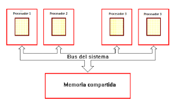

1.1.1 Arquitectura de componentes
La miniaturización y estandarización de los CPU han tenido un impacto significativo en la vida moderna, expandiendo su presencia más allá de las aplicaciones tradicionales en las máquinas de computación dedicadas. En la actualidad, los microprocesadores modernos se encuentran en una amplia gama de dispositivos, incluyendo:
- Teléfonos móviles o celulares: Impulsan la ejecución de aplicaciones y la conectividad a redes.
- Calculadoras: Ejecutan operaciones matemáticas complejas con rapidez y precisión.
- Aviones: Gestionan sistemas críticos de navegación y control.
- Juguetes: Ofrecen funciones interactivas y de entretenimiento avanzadas.
- Automóviles: Controlan funciones desde el motor hasta los sistemas de entretenimiento
- Televisores: Permiten funciones avanzadas como la visualización de contenido en línea.
En resumen, los microprocesadores modernos son componentes clave en una amplia variedad de dispositivos y sistemas, contribuyendo a su funcionalidad, rendimiento y capacidad de procesamiento de datos.
Clásicas.
Estas arquitecturas se desarrollaron en las primeras computadoras electromecánicas y de tubos de vacío. Hay dos arquitecturas distintas relacionadas con el uso y distribución de la memoria: Arquitectura de John Von Neumann y Arquitectura Harvard.
Arquitectura Von Neumann
La unidad central de proceso (CPU) está conectada a una memoria principal única (casi siempre solo RAM) donde se guardan las instrucciones del programa y los datos. A dicha memoria se accede a través de un sistema de interconexión de buses único (control, direcciones y datos). En un sistema con arquitectura Von Neumann, el tamaño de la unidad de datos o instrucciones está fijado por el ancho del bus que comunica la memoria con la CPU. Tener un único bus hace que el microprocesador sea más lento en su respuesta, ya que no puede buscar en memoria una nueva instrucción mientras no finalicen las transferencias de datos de la instrucción anterior.
Componentes principales de Von Neumann:
- Unidad de Memoria.
- Unidad de Entrada/Salida.
- Unidad de Control (incluida en la CPU).
- Unidad Aritmética Lógica (incluida en la CPU).
- Registros de Programas (incluidos en la CPU).
Las instrucciones provenientes del sistema de entrada son almacenadas por la memoria y procesadas por la ALU bajo la dirección de la unidad de control. Los resultados obtenidos son enviados a la unidad de salida. En las computadoras de programa almacenado, el programa puede manipularse como si se tratara de datos. Este concepto da origen a los compiladores, sistemas operativos y es la base de la gran versatilidad de las computadoras modernas.
Limitaciones del modelo Von Neumann: La longitud de las instrucciones por el bus de datos, que hace que el microprocesador tenga que realizar varios accesos a memoria para buscar instrucciones complejas.
Arquitectura Harvard
Esta arquitectura utiliza microcontroladores y tiene la unidad central de proceso (CPU) conectada a dos memorias (una con las instrucciones y otra con los datos) por medio de dos buses diferentes. Una de las memorias contiene solamente las instrucciones del programa (Memoria de Programa), y la otra solo almacena datos (Memoria de Datos). Ambos buses son totalmente independientes, lo que permite que la CPU pueda acceder de forma independiente y simultánea a la memoria de datos y a la de instrucciones.
El tamaño de las instrucciones no está relacionado con el de los datos, y por lo tanto puede ser optimizado para que cualquier instrucción ocupe una sola posición de memoria de programa, logrando así mayor velocidad y menor longitud de programa. La principal desventaja de esta arquitectura es que el bus de datos y direcciones único se convierte en un cuello de botella por el cual debe pasar toda la información que se lee de o se escribe a la memoria, obligando a que todos los accesos a esta sean secuenciales. Esto limita el grado de paralelismo (acciones que se pueden realizar al mismo tiempo) y, por lo tanto, el desempeño de la computadora.
1.1.2 Arquitectura segmentada
Las arquitecturas segmentadas o con segmentación del cauce buscan mejorar el desempeño realizando paralelamente varias etapas del ciclo de instrucción al mismo tiempo. El procesador se divide en varias unidades funcionales independientes y se dividen entre ellas el procesamiento de las instrucciones.
1.1.3 Multiprocesamiento.
Cuando se desea incrementar el desempeño más allá de lo que permite la técnica de segmentación del cauce (límite teórico de una instrucción por ciclo de reloj), se requiere utilizar más de un procesador para la ejecución del programa de aplicación. Las CPU de multiprocesamiento pueden clasificarse en las siguientes categorías:
- SISO – (Single Instruction, Single Operand): Computadoras independientes.
- SIMO – (Single Instruction, Multiple Operand): Procesadores vectoriales.
- MISO – (Multiple Instruction, Single Operand): No implementado.
- MIMO – (Multiple Instruction, Multiple Operand): Sistemas SMP, Clusters.
1.2.1.2 Unidad Aritmetica Logica
Unidad Aritmetica Logica
La unidad aritmético lógica, también conocida como ALU (siglas en inglés de arithmetic logic unit), es un circuito digital que calcula operaciones aritméticas (como suma, resta, multiplicación, etc.) y operaciones lógicas entre dos números.
Una ALU tiene dos tipos distintos de entradas: entradas de datos (A, B) y entrada de control (S).

1.2.1.3 Registros
¿Qué son los registros?
Un registro es una memoria que esta ubicada en el procesador y se encuentra en el nivel más alto en la jerarquía de memoria, por lo tanto tiene una alta velocidad pero con poca capacidad para almacenar datos que va desde los 4 bits hasta los 64 bits dependiendo del procesador que se utilice. Los datos que almacena son los que se usan frecuentemente.
El número de registros del CPU es limitado, ya que las compuertas lógicas del circuito integrado se emplean para implementar las secuencias de control de estas instrucciones especiales.

1.2.1.4 Buses
¿Qué son los buses?
Son canales de comunicación que permiten la transferencia de datos entre diferentes componentes del sistema. Estos componentes pueden ser la CPU, la memoria, los dispositivos de almacenamiento, las tarjetas de expansión, etc.
Tipos de buses
- Bus del sistema: Es el principal canal de comunicación en una computadora y conecta la CPU con la memoria RAM.
- Bus de datos: Facilita la transferencia de datos entre la unidad central de procesamiento (CPU), la memoria y otros dispositivos conectados al sistema.
- Bus del direcciones: Se utiliza para especificar la ubicación de la memoria o de los registros en la CPU a los que se desea acceder.
- Bus de control: Se encarga de transmitir señales de control que coordinan y regulan las operaciones dentro del sistema. Trabaja en conjunto con los buses de datos y de direcciones para garantizar que las operaciones se realicen de manera eficiente y en el orden adecuado.
- Bus de Entrada/Salida: Es una ruta de comunicación que conecta la CPU con los dispositivos externos, facilitando la entrada y salida de datos en una computadora.
1.2.2 Memoria
1.2.2.1 Conceptos básicos del manejo de memoria
¿Qué es la memoria?
Es un dispositivo que puede mantenerse en por lo menos dos estados estables por un cierto periodo de tiempo.
Cada uno de estos estados estables puede utilizarse para representar un bit.
A un dispositivo con la capacidad de almacenar por lo menos un bit se le conoce como celda básica de memoria.
Un dispositivo de memoria completo se forma con varias celdas básicas y los circuitos asociados para poder leer y escribir dichas celdas básicas, agrupadas como localidades de memoria que permitan almacenar un grupo de N bits.
Cada uno de estos estados estables puede utilizarse para representar un bit.
En informática, la memoria es el dispositivo que retiene, memoriza o almacena datos informáticos durante algún periodo de tiempo. La memoria proporciona una de las principales funciones de la computación moderna: el almacenamiento de información y conocimiento.

Gestion de memoria
El proceso de asignación de memoria a los programas que la solicitan.
La gestión de la memoria principal de una computadora es una tarea de suma importancia para el funcionamiento de la misma.
Sistemas de memoria virtual
Los sistemas de memoria virtual separan las direcciones de memoria utilizadas por un proceso de las direcciones físicas reales, permitiendo la separación de procesos e incrementando la cantidad efectiva de memoria de acceso aleatorio utilizando la paginación. La calidad de la gestión de la memoria es crucial para las prestaciones del sistema.
Administracion de memoria
La administración de memoria se refiere a los distintos métodos y operaciones que se encargan de obtener la máxima utilidad de la memoria, organizando los procesos y programas que se ejecutan de manera tal que se aproveche de la mejor manera posible el espacio disponible.
Tecnicas
Las técnicas que existen para la carga de programas en la memoria son:
Partición fija, que es la división de la memoria libre en varias partes (de igual o distinto tamaño).
Partición dinámica, que son las particiones de la memoria en tamaños que pueden ser variables, según la cantidad de memoria que necesita cada proceso.
1.2.2.2 Memoria principal
Tipos de RAM
Existen dos tipos:
- DDR (Double Data Rate): Son capaces de llevar a cabo dos operaciones en cada ciclo de reloj. Se activan dos veces en cada ciclo de la señal de reloj, bien por nivel o por flanco.
- SDR(Single Data Rate): Solo ejecutan una operacion de lectura o escritura.
¿Para que sirve?
Es la encargada de hacer las tareas de forma más inmediata y almacenar las instrucciones de la CPU o los datos que las necesitan constantemente.
Los navegadores suelen ocupar mucha memoria RAM al igual que las aplicaciones que se queden abiertas.
1.2.2.3 Memoria cache
¿Que es?
Es la memoria de acceso rápido de una computadora, que guarda temporalmente las últimas informaciones procesadas. Es un búfer especial de memoria que poseen las computadoras, que funciona de manera similar a la memoria principal, pero es de menor tamaño y de acceso más rápido.
Nivel uno
Se encuentra en el núcleo del procesador. Es utilizada para almacenar y acceder a datos e instrucciones importantes y de uso frecuente, agilizando los procesos al ser el nivel que ofrece un tiempo de respuesta menor.
Nivel dos
Se encarga de almacenar datos de uso frecuente, es mayor que la caché L1, pero a costa de ser más lenta, aun así es más rápida que la memoria principal (RAM). Puede contener una copia del nivel 1 además de información extra, o exclusiva y que su contenido sea totalmente diferente de la cache L1
Nivel tres
Es más rápida que la memoria principal (RAM), pero más lenta que L2, ayuda a que el sistema guarde gran cantidad de información agilizando las tareas del procesador. En esta memoria se agiliza el acceso a datos e instrucciones que no fueron localizadas en L1 o L2. Al igual que la L2, puede ser inclusiva y contener una copia de L2 además de información extra
1.2.3 Manejo de entrada/salida
Una computadora no puede estar formado sólo por la CPU y la memoria.
Para darle alguna utilidad utilidad debe de comunicarse con el mundo exterior a través del subsistema de entrada/salida (I/O input/output).
Funciones del sistema de E/S
1. DIRECCIONAMIENTO: selección del dispositivo correspondiente de entre los dispositivos disponibles en el sistema.
2. SINCRONIZACIÓN: ha de posibilitar que la CPU y la memoria se puedan comunicar con Los dispositivos de E/S.
3. TRANSFERENCIA: el sistema E/S debe de tener toda la circuitería y señales de comunicación apropiadas.

1.2.3.1 Modulos de entrada/salida
Los módulos son las interfaces que tiene la computadora con el exterior. Su obetivo es facilitar las operaciones de E/S entre los periféricos y la memoria o los registros del procesador.
Un módulo de E/S se conecta con el procesador a través de un bus. Los datos que se transfieren se almacenan temporalmente en un registro de datos.
Características
Conectar con la CPU y memoria vía bus del sistema.
Conectar con con los periféricos mediante conexiones de datos particularizadas.
La arquitectura de un E/S se diseña de forma que permita una forma sistemática de controlar las interacciones con el mundo exterior y proprocione al sistema operativo la información que necesita para gestionar la actividad de E/S.
El módulo E/S es frecuentemente responsable de realizar una detección de errores, que pueden ser avisados por el periférico o producirse por fallos de transmisión.
Un módulo de E/S permite a la CPU controlar al periférico únicamente con operaciones de lectura/escritura.
Control de transferencia de datos
1.La CPU pide al módulo E/S del periférico deseado.
2.El módulo E/S proporciona el estado.
3.Si el periférico está listo, la CPU solicita la transferencia de datos por medio de un comando al módulo E/S.
4. El módulo E/S obtiene el dato del periférico.
5.El dato se transfiere desde el módulo a la CPU.
1.2.3.2 Entrada/Salida programada
Con la E/S programable, el módulo realiza la instrucción que le encarga la CPU y coloca los bits correspondientes en el registro de estado.
Es responsabilidad de la CPU comprobar periódicamente el estado hasta que se complete la instrucción.
Supongamos, por ejemplo, el caso de lectura de datos de un periférico y almacenamiento de memoria:
Para ejecutar una instrucción E/S, la CPU utiliza una dirección, que especifica el módulo particular, y un comando E/S (en este caso, lectura).
Los datos se leen de uno en uno.
Para cada palabra, la CPU debe permanecer en un ciclo de comprobación determina que el dato está disponible en el registro de datos del módulo.
1.2.3.3 Entrada/Salida mediante interrupciones
Esta técnica pretende evitar que el procesador pare o haga trabajo improductivo, mientras que espera a que el periférico esté preparado para hacer una nueva operación.
El hardware de la computadora, necesita tener un conjunto de líneas de control del bus del sistema y de petición de interrupción.
Funcionamiento
1. El procesador ejecuta instrucciones de un programa. Al finalizar cada instrucción comprueba si se ha producido una interrupción.
2. En caso afirmativo se salva el estado actual del programa (contador del programa y registros) y se salta a a ejecutar la rutina de servicio correspondiente.
3. La rutina de servicio efectúa las operaciones apropiadas en la E/S para realizar la transferencia de datos solicitada.
4.Al finalizar la rutina de servicio se recupera el estado de la CPU y se continúa ejecutando el programa que se estaba ejecutando antes de la interrupción.
Interrupciones
ENMASCARABLES (se pueden dejar de atender por software).
NO ENMASCARABLES (siempre atendidas).
Dos formas de conocer la dirección/posición (vector) donde se encuentra la rutina de servicio de la interrupción.
Vector de interrupciones siempre FIJO ó el periférico suministra el vector de interrupción.
1.2.3.4 Acceso directo a memoria
El DMA permite que el dispositivo de red mueva los datos del paquete directamente a la memoria del sistema, reduciendo la utilizacion del CPU. Sin embargo, la frecuencia y los intervalos aleatorios en los cuales los paquetes llegan no permiten que el sistema ingrese un estado de energía más bajo
El coalescentes DMA permite que el NIC recoja los paquetes antes de que inicie un evento DMA. Esto puede aumentar la latencia de la red, pero también aumenta las probabilidades de que el sistema consuma menos energía.
La DMA es utilizada en: controladores de disco, tarjetas graficas y tarjetas de sonido.
Es esencial en todo ordenador moderno, ya que permite a dispositivos de diferentes velocidades comunicarse sin someter a la CPU a una carga masiva de interrupciones.
Mayor DMA significa mayor energia guardada pero pueden aumentar la latencia de red del sistema.
Una transferencia DMA coniste principalmente en copiar un bloque de memoria de un dispositivo a otro.
Un ejemplo es al mover un bloque de memoria desde una memoria externa a una interna mas rapida.
Puede llevar a problemas de coherencia de caché. Imagine una CPU equipada con una memoria caché y una memoria externa que se pueda acceder directamente por los dispositivos que utilizan DMA.
Cuando la CPU accede a X lugar en la memoria, el valor actual se almacena en la caché. Si se realizan operaciones posteriores en X, se actualizará la copia en caché de X, pero no la versión de memoria externa de X. Si la caché no se vacía en la memoria antes de que otro dispositivo intente acceder a X, el dispositivo recibirá un valor caducado de X.
Del mismo modo, si la copia en caché de X no es invalidada cuando un dispositivo escribe un nuevo valor en la memoria, entonces la CPU funcionará con un valor caducado de X.
1.2.3.5 Canales y procesadores de entrada/salida
EL canal de E/S es una extensión del bus del 8088.
Los canales de E/S proporcionan una línea Ready para permitir operaciones con dispositivos de memoria o de E/S lentos.
Los ciclos de reloj se presentan aproximadamente cada 15 m sec y requieren de cinco ciclos de reloj.
Los dispositivos de E/S están direccionados utilizando un mapeo de E/S con el espacio de direccionamiento. El canal proporciona a las tarjetas de E/S 512 direcciones de dispositivos.
Se refiere a un conjunto de líneas de comunicación que permiten la transferencia de datos entre los diferentes componentes de la computadora.
Permiten que el procesador se comunique con la memoria, los dispositivos de almacenamiento, las tarjetas de expansión y otros componentes.
1.2.4.1 Tipos de buses
Es una parte fundamental de la comunicación entre los diferentes o elementos de un ordenador.
Es un medio físico por el cuál pueden viajar las señales con la información que se tiene que transmitir.
Hay diferentes tipos de buses: método de envío de la información, según las direcciones y según la información que transporten.
Buses segun el envio de informacion
Paralelo: Los datos son enviados por bytes al mismo tiempo, con la ayuda de varias líneas que tienen funciones fijas. Por ejemplo, si se desea crear un bus paralelo para transmitir datos de 8 bits, se necesitan 8 líneas individuales.
En serie: La información se transmite de bit a bit, lo que implica que solo se necesita una línea de datos. Es usado en buses para discos duros, tarjetas de expansión, USB.

Buses segun las direcciones
Unidireccional: Solo permite la transmisión en una dirección o sentido. Se usa, por ejemplo, en un sistema de CPU simple, donde solo se envían direcciones a la memoria.
Bidireccional: Permite la transmisión de datos en una dirección u otra, pero no ambas al mismo tiempo.
Duplex completo: Se transmiten datos en ambos sentido o direcciones de manera simultánea. Para estas transmisiones, se requiere el uso de múltiples vías separadas.

Buses segun informacion que transportan
Dirección: Se encargan de indicar la posición de memoria o el dispositivo con el que se desea establecer comunicación.
Control: Transportan señales de estado de las operaciones efectuadas por la CPU a las demás unidades.
Datos: Mueve los datos entre los dispositivos del hardware de entrada, de salida y de almacenamiento.
1.2.4.2 Estructura de buses
Un bus es un medio compartido de comunicación constituido por un conjunto de líneas (conductores) que conecta las diferentes unidades de un computador. La principal función de un bus será, pues, servir de soporte para la realización de transferencias de información entre dichas unidades.
La unidad que inicia y controla la transferencia se conoce como master del bus para dicha transferencia, y la unidad sobre la que se realiza la transferencia se conoce como slave. Los papeles de master y slave son dinámicos, de manera que una misma unidad puede realizar ambas funciones en transferencias diferentes.
Por ejemplo, una unidad de DMA hace de slave en la inicialización que realiza el master, la CPU, para una operación de E/S. Sin embargo, cuando comienza la operación, la unidad de DMA juega el papel de master frente a la memoria, que en esta ocasión hace de slave.
Para garantizar el acceso ordenado al bus, existe un sistema de arbitraje, centralizado o distribuido, que establece las prioridades cuando dos o más unidades pretenden acceder al mismo tiempo al bus, es decir, garantiza que en cada momento sólo exista un master.
Los computadores modernos tienen por lo menos 4 buses diferentes (bus interno, bus del procesador, bus del caché, bus local de E/S, bus estándar de E/S). Se les considera una jerarquía, porque cada bus se conecta al nivel superior a él dentro del computador, integrando así todas las partes del computador.
Bus interno, procesador y cache
Interno: Este mueve datos entre los componentes internos del microprocesador.
Procesador: El bus del procesador es el más rápido tratándose de que este es el dispositivo más rápido del computador.
Cache: Un bus de caché es un bus de alta velocidad dedicado que utiliza un procesador de computadora para comunicarse con su memoria caché.
Bus local y estandar
Local: Alta velocidad conecta el procesador a la caché sin interrumpir el flujo de datos. Permite acceso rápido a los datos en caché y la conexión de dispositivos de entrada y salida.
Estandar: Conexión más lenta a través de otro adaptador debido a las líneas eléctricas que unen las partes del microprocesador, formando el bus interno por donde circulan datos, señales de control y direcciones de memoria, que en un microprocesador de 32 bits consta de 32 líneas.
1.2.5 Interrupciones
Forma de comunicacion de software y hardware con la CPU. Al escribir en su teclado, el hardware y software respectivos envian interrupciones a la CPU para activar el procesamiento de su entrada. Tambien pueden decirle a la PCU que ocurrio un error, y esto puede causar un aumento en el uso de la CPU, en un sistema saludable, estas se extenderan entre el 0.1% y el 2% del uso de la CPU
Consiste en un mecanismo que le permite al hardware la invocacion de una rutina fuera del control del programa que esta siendo ejecutado. Es una supension temporal de la ejecucion de un proceso, para pasar a ejecutar una subrutina de servicio de interrupción, la cual, por lo general, no forma parte del programa, sino que pertenece al sistema operativo o al BIOS. Una vez finalizada dicha subrutina, se reanuda la ejecución del programa.
La primera técnica que se empleó para esto fue el polling, que consistía en que el propio procesador se encargara de sondear los dispositivos periféricos cada cierto tiempo para averiguar si tenía pendiente alguna comunicación para él.